Asteroides
En este tutorial desarrollaremos un juego inspirado en el clásico asteroides de las máquinas recreativas. Se trata de una nave espacial, dirigida con las flechas del cursor, que se enfrenta a una lluvia de asteroides que hay que destruir. Por otra parte, se trata de un mundo esférico, y si nosotros o las rocas nos salimos por un extremo de la ventana, aparecemos por el extremo contrario.
Primer paso
Entre los ejemplos que incorpora pilas-engine se encuentra “ejemplo-nave”, el cual cuenta con el actor principal de nuestro juego, la nave espacial, con el desarrollo del movimiento, su disparo y sonido ya codificados.
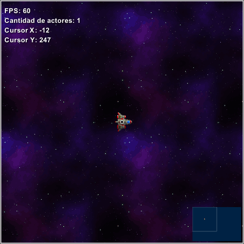
Para entender lo que se encuentra codificado en este ejemplo, analizamos cada sección del mismo.
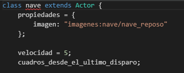
Primero se encuentra definido qué imagen vamos a utilizar para representar a nuestro actor principal al comienzo del juego, con qué rapidez se va a desplazar y dejamos una variable para controlar el láser que dispara nuestra nave.
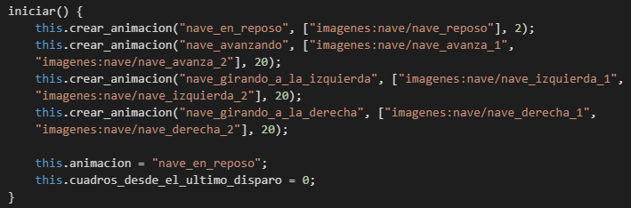
Luego, tenemos la sección de la animación, lo que se encuentra definido aquí son las diferentes imágenes que vamos a utilizar para darle realismo a nuestro juego haciendo que la nave parezca que activa y desactiva sus propulsores para avanzar o girar.
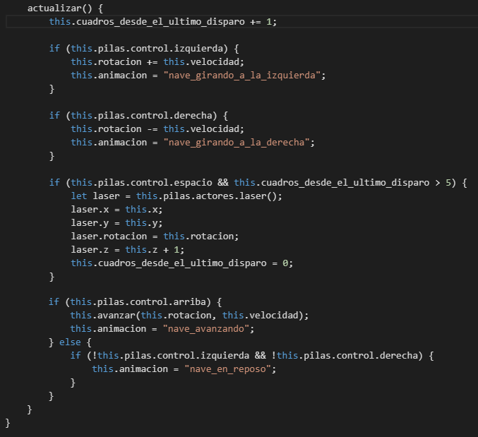
Por último, encontramos como se va a desplazar nuestra nave al accionar las distintas flechas de nuestro teclado, arriba, derecha e izquierda. Al presionar alguna de las mencionadas teclas provocará en nuestra nave el correspondiente movimiento y le asignará la imagen asociada que hemos descrito en la sección anterior.
También se encuentra el movimiento y sonido que realizará el láser que dispara nuestra nave cuando se presione la barra espaciadora.
Segundo paso
Ahora que comprendemos que se encuentra desarrollado, nos toca a nosotros incluir el resto de la funcionalidad para tener nuestro juego. ¡Manos a la obra!
Como dijimos, se trata de un mundo esférico, y si nos salimos por un extremo de la ventana, aparecemos por el extremo contrario, para dar este efecto incorporamos en la sección actualizar lo siguiente:
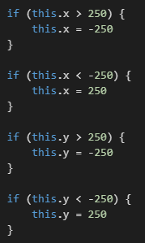
Con ello, cuando llegamos a un extremo de la ventana nos redirige al extremo opuesto. Debido a que la ventana posee sus extremos en los valores 250 es que se utilizó los mismos para ello.
Podemos presionar en el botón “Ejecutar” para comprobar lo que hemos realizado, desplazandonos con las flechas podemos observar que al irnos por un lado de la ventana aparecemos en el lado opuesto.
Lo siguiente que integraremos al juego son los asteroides que nuestra nave va a destruir con su láser. Para ello agregamos un nuevo actor en la opción de Crear Actor.
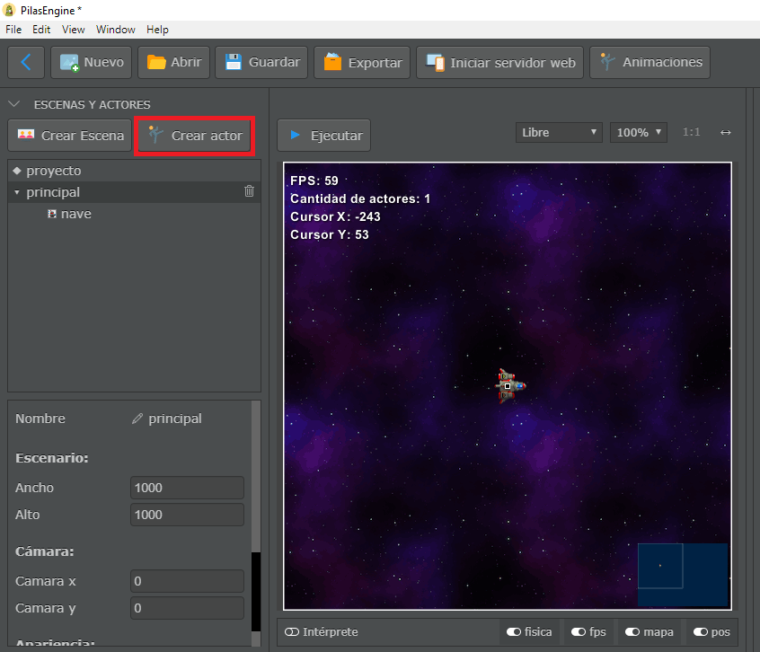
Al presionar este botón se nos abrirá la siguiente ventana y seleccionaremos la opción actor.
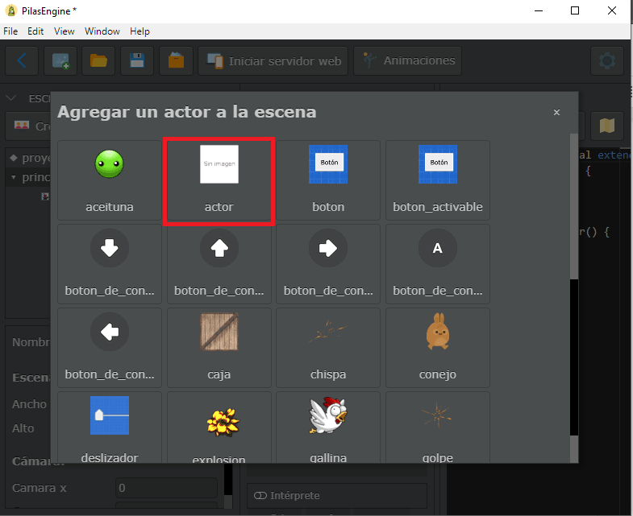
Esta opción nos permitirá elegir el aspecto que le queramos dar y podremos configurarlo como nos sea más útil. En este caso nosotros le colocaremos de nombre “asteroide”, como imagen usaremos la que se denomina “asteroide_grande” y lo colocaremos en una esquina para tener más visibilidad de lo que estamos trabajando, se pueden desplazar los actores seleccionandolo en la ventana y arrastrándolo al lugar que querramos.
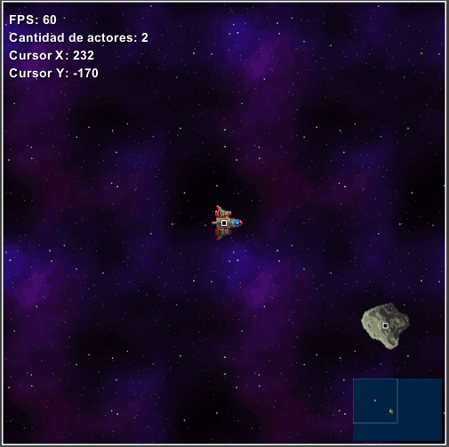
Este asteroide se desplazará desde arriba hacia abajo, y si toca nuestra nave perderemos el juego. Para realizar esto, primero haremos que el mismo se desplace, para ello lo seleccionaremos, se puede seleccionar desde la ventana o por su nombre en el sector “Escena y actores”. Y dentro de su código colocaremos una de las recetas predefinidas “Mover el actor hacia la izquierda y eliminar si sale de la pantalla”.
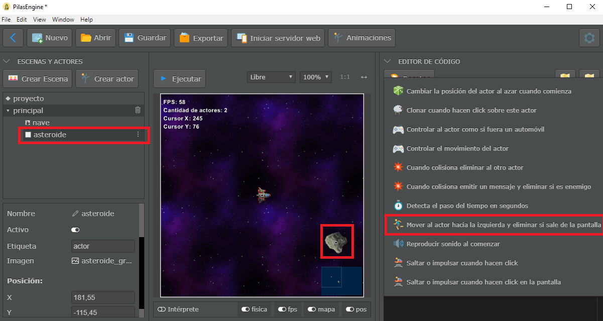
Como esta Receta nos incluye otro método “actualizar” eliminamos el anterior, y modificamos la velocidad para ralentizar su caída, modificamos para que el eje donde actúe sea el eje y, tanto en la velocidad como en la pregunta.
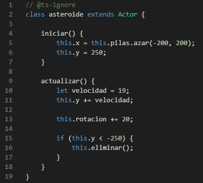
Como vemos agregamos la línea this.rotacion += 20 que le dará un efecto más
realista al asteroide ya que permite que el mismo rote mientras se está desplazando. También, hemos
agregado unas líneas en “iniciar()”, lo que permite esto es que el asteroide aparezca en lugares
distintos cada vez, y que su ubicación este fuera de pantalla al iniciar el juego.
Si damos al botón “Ejecutar” podemos ver cómo se comporta el asteroide, pero nosotros queremos que haya varios, para ello nos dirigimos al escenario “principal”, y en su código elegimos la receta “Crear copias (o clones) de un actor cada determinado tiempo”.
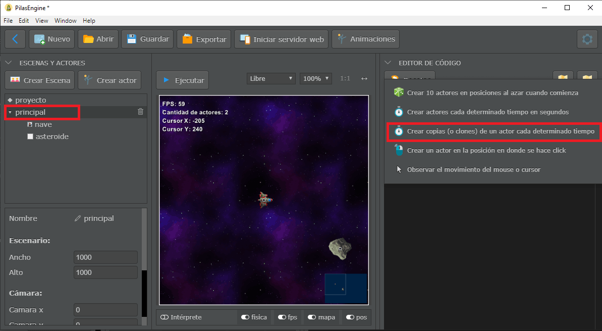
Modificamos la receta para que genere un asteroide cada 3 segundos y otro cada 2 segundos, para tener una mayor cantidad pero con lapsos de tiempo distintos.
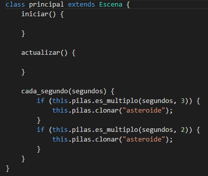
Tenemos nuestros asteroides, ahora haremos que cuando chocan con nuestra nave, ésta se destruya y nos permita reintentar el juego. Para ello, le asignaremos tanto a la nave como al asteroide una “Figura” del tipo “círculo”, en “Radio” al asteroide le colocaremos un valor de 30 y a la nave un valor de 20, para que se ajuste mejor a su tamaño. A la nave le desactivaremos la opción “Dinámica”, y al asteroide le activaremos la opción “¿Es sensor?” que permite que la nave no cambie su rumbo debido a que chocó con otro actor. Para ambos debe quedar de la siguiente manera:
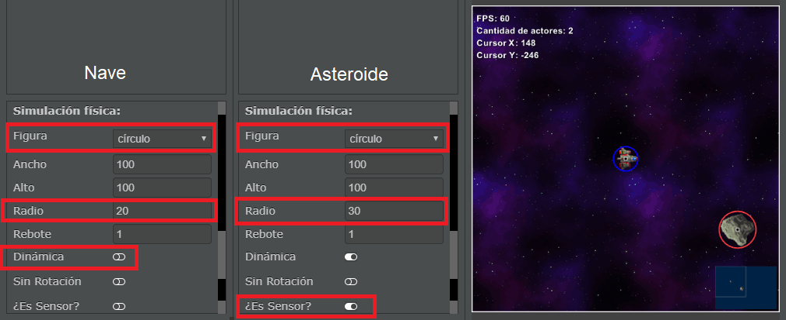
Para darle más realismo, haremos que cuando la nave se destruya aparezca una explosión. Añadimos un nuevo actor como hicimos con el asteroide, lo llamaremos “explosion” y en imagen utilizaremos “explosion_003”. Algo muy importante, es que este actor no aparezca al iniciar el juego, para ello desactivaremos la opción “Activo”.
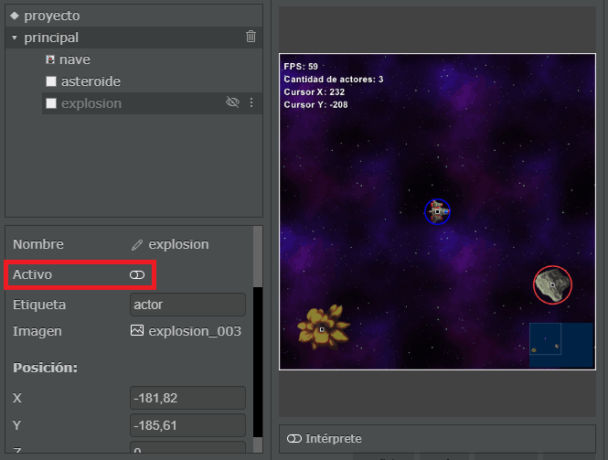
Y para permitirle al usuario volver a iniciar el juego, crearemos otro actor, pero esta vez, seleccionaremos uno ya predefinido, “reiniciar_escena”.
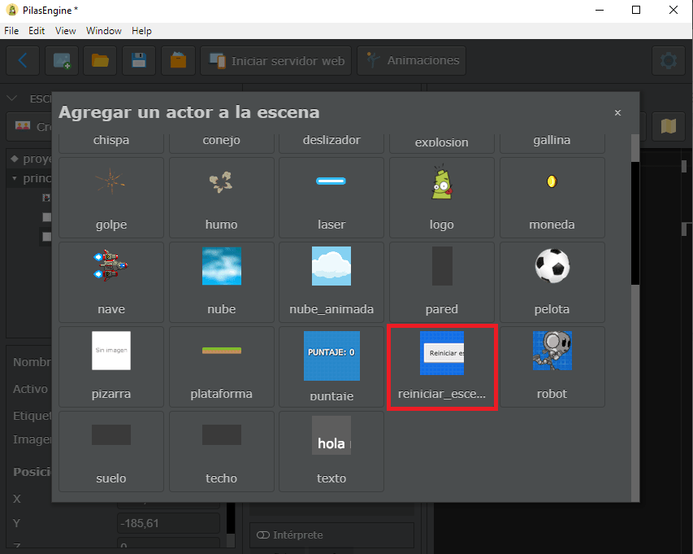
Como tampoco queremos que aparezca cuando inicie el juego, también le desactivamos la opción “Activo”.
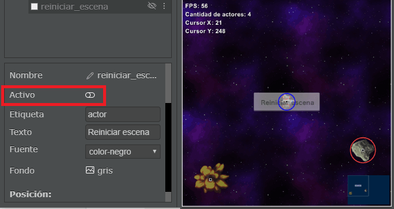
Con todos estos actores creados y personalizados, nos dirigimos al código de la nave y vamos a incluir una receta del tipo “Cuando colisiona emitir un mensaje y eliminar si es enemigo”.
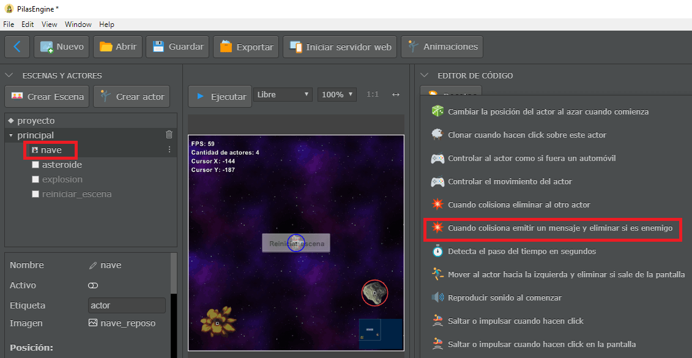
Modificamos la receta de la siguiente manera:
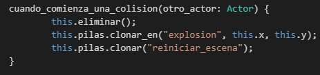
La primera línea elimina el actor nave, la segunda hace aparecer la explosión en el lugar donde estaba la nave en el momento que chocó, y la tercera línea permite que se visualice el cuadro “Reiniciar escena” para volver a empezar con el juego.
Podemos incluir que al chocar con el asteroide se produzca el sonido de una explosión y la pantalla vibre para darle un mejor efecto a la situación. Esto lo podemos lograr ingresando dentro del código del actor “explosion” e introduciendo las siguientes líneas:
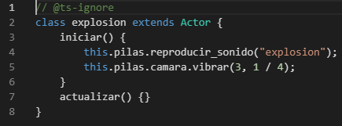
La primera línea reproduce el sonido que mencionamos, y la segunda línea hace vibrar la pantalla 3 píxeles por ¼ segundo (o 250 milisegundos).
Tercer paso
Ya tenemos nuestra nave y los asteroides que nos hacen perder, ahora vamos a destruir estos asteroides con nuestro láser, y para que cuantos asteroides destruimos podemos integrar un contador de puntos.
Para colocar el puntaje del juego vamos a crear un actor del tipo “puntaje” y lo vamos a colocar en la esquina superior derecha.
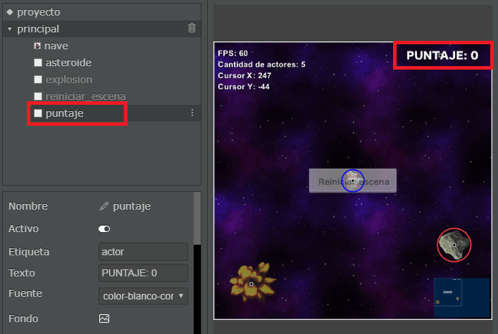
Y para el laser, necesitamos realizar unas modificaciones. Primero vamos a crear un actor del tipo “laser” y le vamos a cambiar las siguientes propiedades:
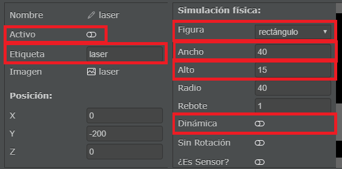
Como ya hemos utilizado, “Activo” lo deshabilitamos para que no aparezca cuando iniciamos el juego, “Etiqueta” es para reconocer el actor, la “Figura” con su tamaño la colocamos para que pueda chocar con el asteroide, y “Dinámico” también lo deshabilitamos para que nuestro láser no respete la gravedad del juego.
Una vez tenemos realizado esto, vamos al código de la nave y modificamos la siguiente sección del mismo, dentro de actualizar(), para que en vez de poseer un láser predefinido utilicemos el que acabamos de crear.
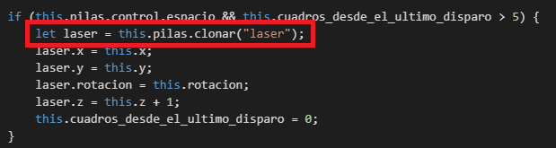
Ahora para destruir el asteroide incluimos en su código la receta del tipo “Cuando colisiona emitir un mensaje y eliminar si es enemigo”, y lo modificamos de la siguiente manera para que solo se destruya el asteroide si quien lo choca es el laser, porque si es la nave quien choca con él, la que se destruye es la nave perdiendo el juego.
También podemos observar que incrementamos el puntaje al destruir al asteroide y reproducimos un sonido para que sea más realista.
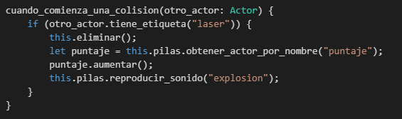
Si damos en el botón “Ejecutar” vemos como ha quedado nuestro pequeño juego.
Paso extra
Algo que se utiliza mucho en los juegos son bonus para obtener un puntaje mejor. Esto lo podemos incluir dentro de nuestro juego creando otro actor del tipo “actor”, le ponemos de “Nombre” y “Etiqueta” bonus, y como imagen podemos hacer que sea un “diamante_azul”.
A su vez, le colocamos una “Figura” con un “Radio” que se acople al tamaño del bonus y habilitamos la opción “¿Es sensor?” para que no desvie a la nave en su trayectoria al chocar con él.
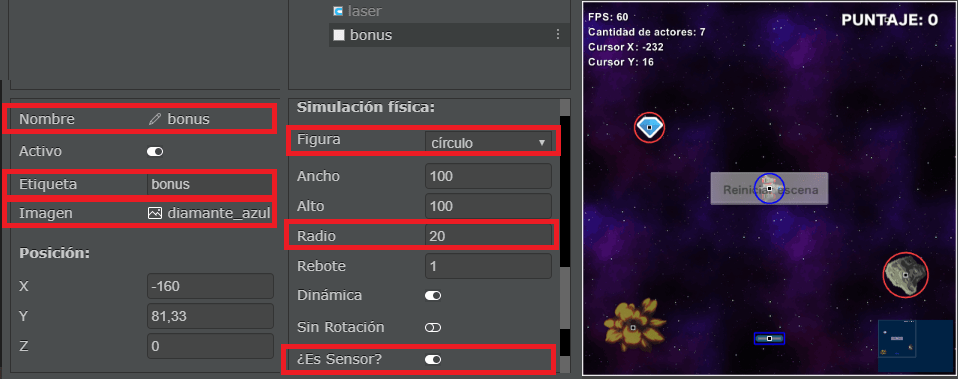
Como podemos ver, tiene propiedades muy parecidas al actor asteroide. Y como el asteroide, vamos a hacer que aparezcan estos bonus cada cierto tiempo, para ello vamos a la escena “principal”, y agregamos que se generen los mismos.
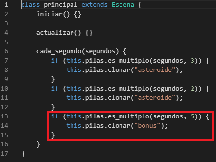
Luego, para controlar su movimiento, realizamos los mismos pasos que con el asteroide, colocando la receta “Mover el actor hacia la izquierda y eliminar si sale de la pantalla”, además de modificar las líneas correspondientes. Lo único que cambia con respecto al asteroide es donde aparece al inicio el bonus, que en este caso es 300, lo realice así para que el primero no aparezca apenas inicia el juego, sino que deje un tiempo de espera.
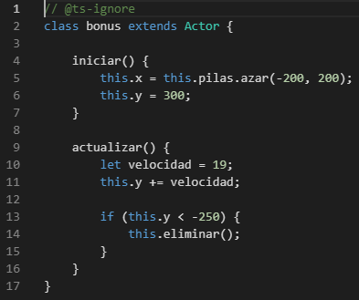
Y por último, agregamos en el código de la nave que al chocar con estos bonus no se destruya, sino que sume puntos al puntaje del juego. Esto lo hacemos modificando lo siguiente:
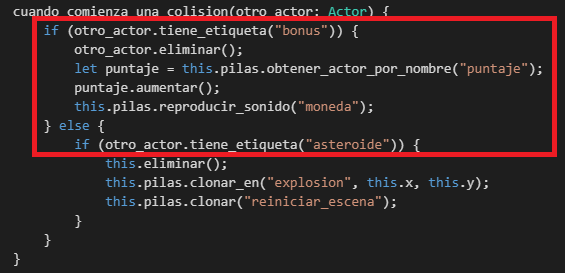
Podemos probar nuestro juego dando en el botón “Ejecutar”.
Esto es todo, de esta forma ya tenemos un pequeño juego del típico Asteroides, el cual se puede mejorar incluyendo nuevas funcionalidades o haciendo más visible el código.
¡Muchas gracias!